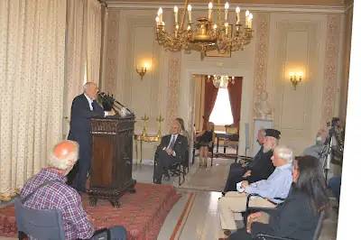
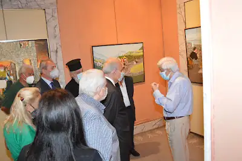
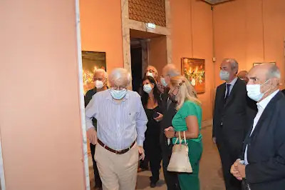
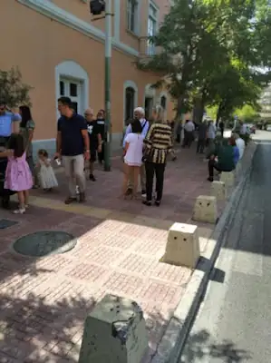
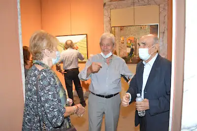
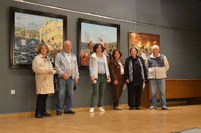
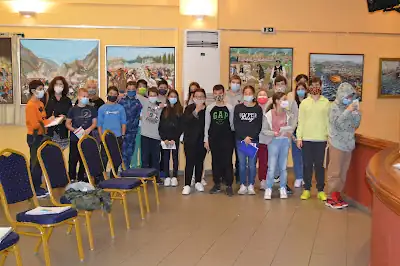
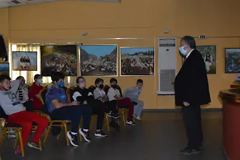
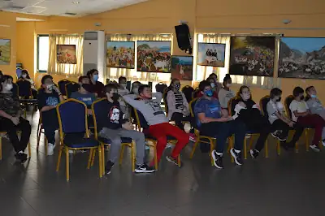
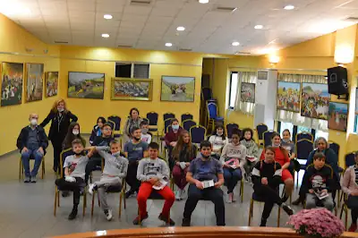

ΕΚΘΕΣΗ: 1821 Η ΕΛΛΗΝΙΚΗ ΕΠΑΝΑΣΤΑΣΗ
Από 8 Σεπτεμβρίου έως 20 Οκτωβρίου 2021
Μουσείον της Πόλεως των Αθηνών - Ίδρυμα Βούρου-Ευταξία
"Ελπίδα και Αγώνας" / "Hope and Struggle"
Δελτίο τύπου
Την Κυριακή 19/9/2021 και ώρα 12.00 πραγματοποιήθηκαν με επιτυχία τα εγκαίνια της εικαστικής έκθεσης του Νώντα Ρεντζή "1821 η Ελληνική Επανάσταση" παρουσία του Εξοχότατου κ. Προκοπίου Παυλόπουλου τ. Προέδρου της Δημοκρατίας στο Μουσείο της Πόλεως των Αθηνών Ίδρυμα Βούρου-Ευταξία.
Στα εγκαίνια παρευρέθηκαν τιμώντας την περιοδική έκθεση: ο Πανοσιολογιότατος πατέρας Δημήτριος, ο τ. Πρόεδρος της Δημοκρατίας κ. Προκόπιος Παυλόπουλος, ο τ. Υπουργός κ. Στάθης Παναγούλης, ο Γ.Γ. Δημόσιας Τάξης Υπουργείου Προστασίας του Πολίτη κ. Κωνσταντίνος Τσουβάλας, ο Δήμαρχος Θέρμου Αιτωλοακαρνανίας κ. Σπύρος Κωνσταντάρας, ο Αντιδήμαρχος Τεχνικών Υπηρεσιών του Δήμου Ηλιούπολης κ. Κωνσταντίνος Σεφτελής, η Αντιδήμαρχος Πολιτισμού Κηφισιάς κα. Παπαδημητρίου, η Πρόεδρος της επιτροπής για την Ελληνική Επανάσταση 1821 του Δήμου Ηλιούπολης κα Κατερίνα Μαρκουλάκη, ο Πρόεδρος του Μουσείου της Πόλεως Αθηνών Α.Γ. Βογιατζής, ο Καθηγητής Πανεπιστημίου ΕΚΠΑ και Πρόεδρος Αιτωλικής Πολιτιστικής Εταιρείας κ. Παναγιώτης Κοντός, ο Γ.Γ. Ένωσης Αποστράτων Αξιωματικών Ηλιούπολης - συγγραφέας κ. Καραχάλιος Πραξιτέλης, ο εκδότης Ι. Ζαχαρόπουλος, ο Πρόεδρος της Ένωσης Καλλιτεχνών και Λογοτεχνών Ηλιούπολης κ. Στυλιανός Μαρούλης, ο Πρόεδρος της Unesco Αθηνών κ. Δημήτριος Καρακατσάνης, ο εικαστικός κι εκδότης του περιοδικού Gallery Guide Greece κ. Γεώργιος Ζυμαράκης, η Αξιωματικός της ΕΛ.ΑΣ - εικαστικός κ. Νάντια Μπαράκου, ο εικαστικός κ. Σταύρος Τζώρτζος, η εικαστικός κα. Σταυρούλα Αλεξανδράτου, η καθηγήτρια Φιλολογίας κα. Θεανώ Σοφικίτου, ο Πρόεδρος των Αρκάδων κι ερμηνευτής κ. Κώστας Παυλόπουλος, ο συγγραφέας κ. Διονύσιος Μπερερής και πλήθος μελών της οικογένειας και φίλων που ανταποκρίθηκε στο κάλεσμα.
Για τη ζωγραφική του μίλησαν ο τ. Πρόεδρος της Δημοκρατίας κ. Προκόπιος Παυλόπουλος και η καθηγήτρια κ. Θεανώ Σοφικίτου. Ανέφεραν εμφατικά ότι η ζωγραφική του Νώντα δεν εντάσσεται σε σχολές και κινήματα αλλά αποτελεί μία απλή έκφραση ψυχής αποτυπωμένη στον καμβά από τον λαϊκό ζωγράφο που σε συμπαρασύρει σε μία αλληλουχία στοχασμών κι εθνικής ανάτασης!
Χαιρετισμούς απηύθυνε ο Δήμαρχος Θέρμου κ. Σπύρος Κωνσταντάρας κι ο Πρόεδρος του Μουσείου της Πόλεως των Αθηνών κ. Αντώνης Βογιατζής, ενώ την εκδήλωση τίμησε με τη φωνή του και το αηδόνι του Μοριά κ. Κώστας Παυλόπουλος.
Η έκθεση θα είναι ανοιχτή για το κοινό καθημερινά (εκτός Τρίτης) από τις 09:00-16:00 και τα Σαββατοκύριακα από τις 10:00-15:00 μέχρι την Τετάρτη 20 Οκτωβρίου 2021.
Χώρος έκθεσης: Μουσείο της Πόλεως των Αθηνών, Ίδρυμα Βούρου-Ευταξία, Ι. Παπαρρηγοπούλου 5-7 Πλατεία Κλαυθμώνος, Αθήνα.










